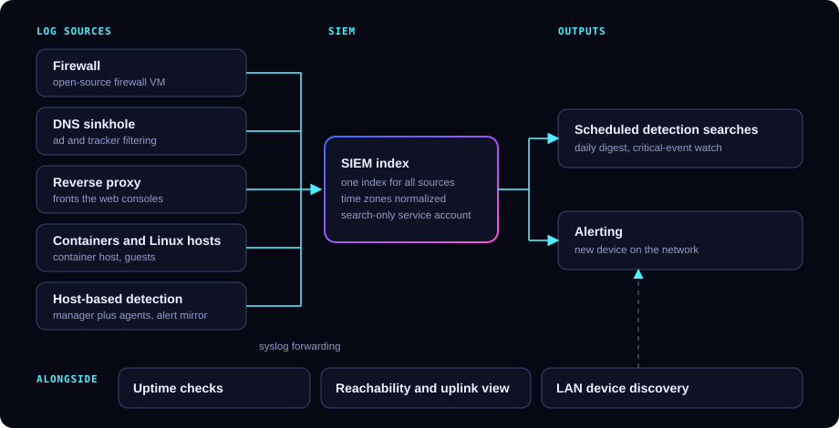
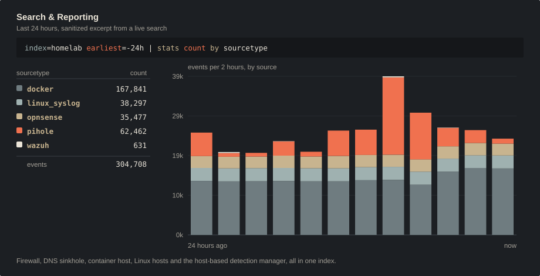
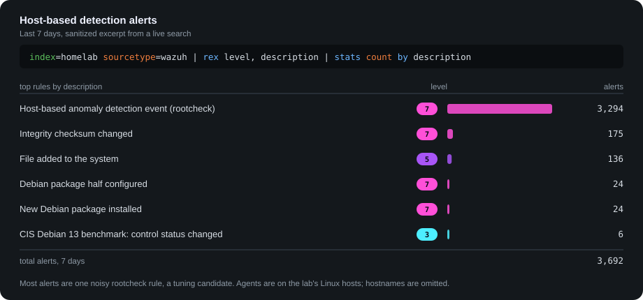

Hands-On Practice
Homelab
A self-hosted security monitoring and detection lab, and the Breakwater OT/IoT vulnerability lab from my doctoral coursework.
Security Monitoring Lab
I run a small, self-hosted lab where I try out SIEM, host-based detection, and monitoring tooling before I recommend it to Cyntraix clients. It runs on two small machines at home.
- Virtualization: two Proxmox VE nodes running lightweight containers and full virtual machines, kept deliberately unclustered.
- Network services: an open-source firewall VM, a DNS sinkhole for ad and tracker filtering, and a reverse proxy in front of the web consoles.
- Detection: a SIEM with dedicated syslog inputs and a host-based intrusion detection manager with agents on the lab's Linux hosts.
- Monitoring: uptime checks for every core service, reachability probes with an uplink dashboard, and LAN device discovery.
- Testing and AI: a penetration-testing VM, and a small language model running locally on CPU.
- Firewall, DNS, proxy, container, Linux, and host-agent alert logs are forwarded over syslog into one SIEM index.
- Each source's time zone is normalized so events land in the right search window.
- Scheduled searches produce a daily digest and a critical-event watch, running under a search-only service account scoped to that one index.
- A new device joining the network raises an alert in the SIEM.

Generic by design: roles only, no addresses or hostnames.

Real results from a live search over the lab's index, redrawn as a sanitized excerpt: source names and counts only, no hosts or addresses.

Real alert counts from the lab's index, redrawn as a sanitized excerpt: rule names and levels only, no hosts or addresses.
Decisions & Lessons
- Kept the firewall console off the reverse proxy, because fronting it would have meant turning off TLS certificate verification.
- Remote shell access to the second node is key-only, and the automation key works from one machine only.
- The local language model listens on the lab network only and was installed only after its release checksum was verified.
- Automated log review uses a read-only account that can search one index and nothing else.
- Found a VPN container that had never worked, crash-looping more than 12,000 times and writing about 361 GB to disk. Retired it and removed its agent.
- Decommissioned an unused DNS filter after confirming it had zero clients, then reused its slot.
- Traced a flapping, slow network link to a bad cable before blaming the network card.
- Learned that one spinning disk under a SIEM, a HIDS, and a metrics store is the bottleneck. Moving those to SSD is next.
Breakwater Lab
Doctoral coursework, George Washington University (SEAS 8414, Analytical Tools for Cyber). A containerized OT/IoT simulation network used to build an end-to-end security-analytics pipeline, one phase at a time.
- Asset inventory: active and passive discovery against a declared 26-device simulated network confirmed 20 devices (77%) with zero phantom hosts. TCP probing found the most.
- Device identity: fingerprinting from management-plane self-reports rather than transport banners, with three-witness corroboration and an admissibility gate before any downstream use.
- Vulnerability triage: NVD CVEs fused with CISA KEV and FIRST EPSS into a transparent score, CVSS + 10·EPSS + 5·[KEV] + 2·[ransomware].
- Attack paths: attack graphs with k-shortest-path analysis, mapped to MITRE ATT&CK for ICS and exported as STIX 2.1.
- Simulation: a digital twin built from scan data, with checkpoint rollback for testing remediation before touching the real network.
- Crypto readiness: harvest-now-decrypt-later exposure and a migration plan toward NIST post-quantum standards.
- Write-up: an ACM-format paper, "Evidence-Bounded Vulnerability Intelligence for OT/IoT Networks," in preparation.
All Breakwater devices are simulated containers. No real operational network was scanned.